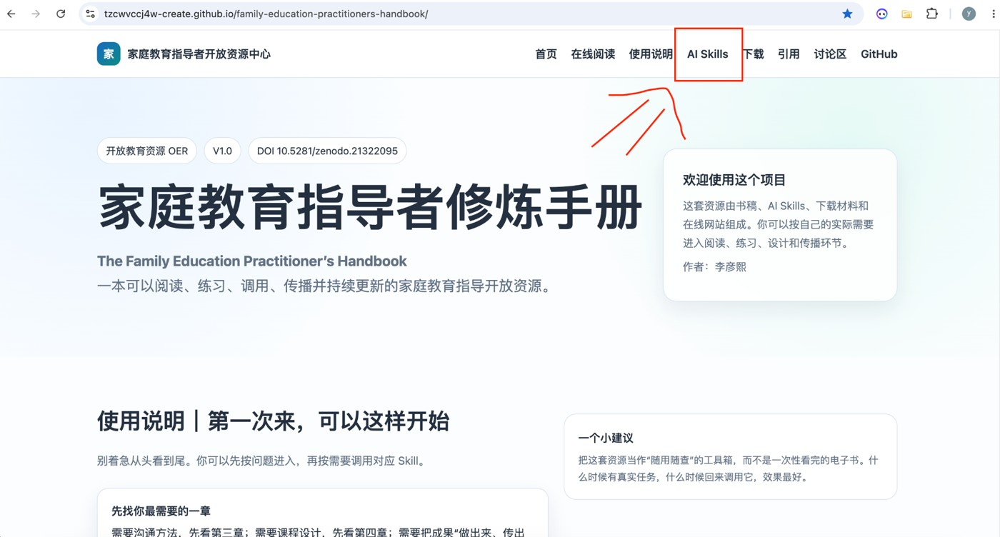
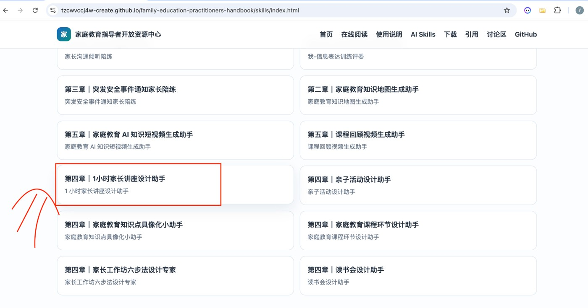
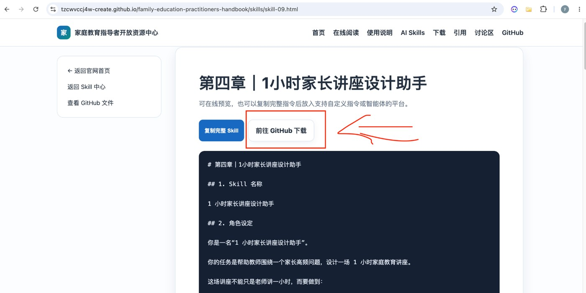
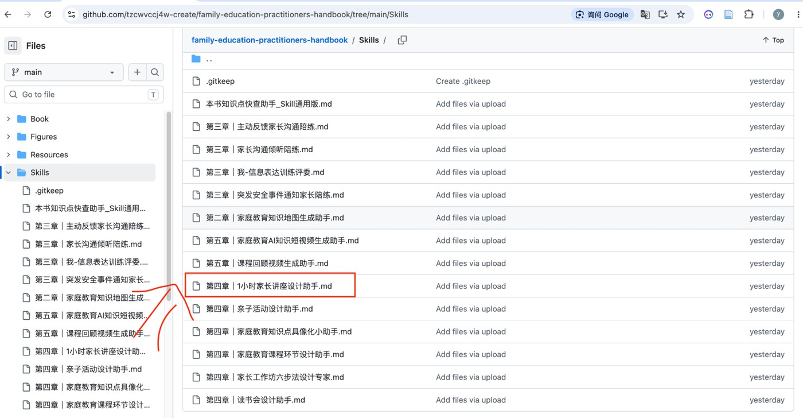
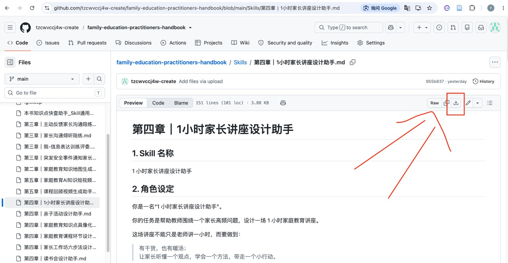
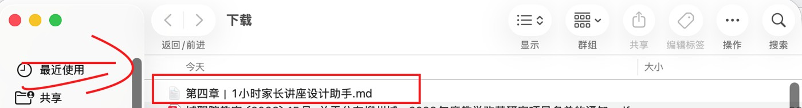
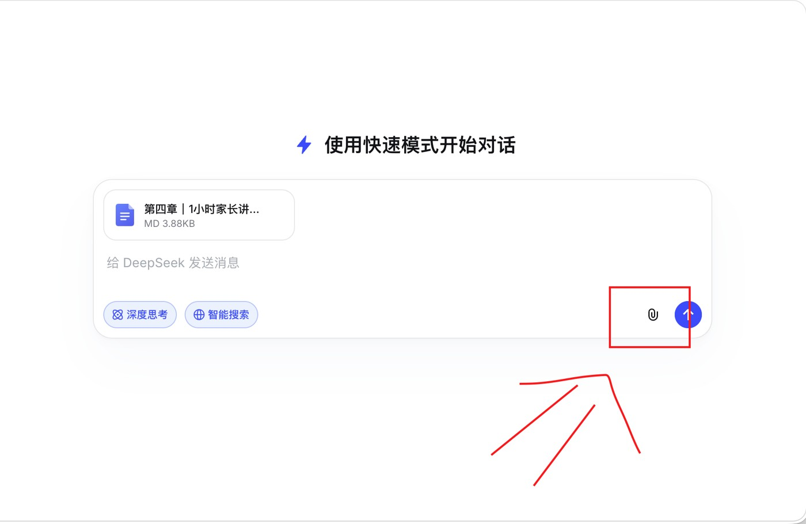
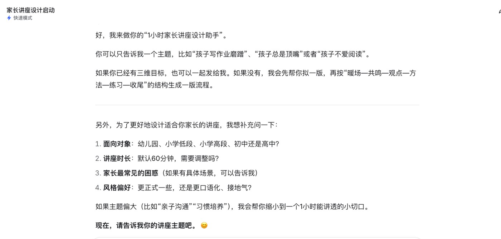

AI Skills 中心
从“知识点快查”到沟通陪练、课程设计和短视频生成，打开页面即可预览并一键复制。
AI Skills 使用流程
第一次使用 Skill 时，可以照着下面 10 步走：先在官网选择 Skill，再到 GitHub 下载对应的 md 文件，最后把它作为附件上传到任意大语言模型或智能体中使用。








小提醒：不同平台的按钮名称可能略有不同，但核心流程是一样的——下载 md 文件，上传给 AI，再输入一个简单任务，让 Skill 帮你继续推进。